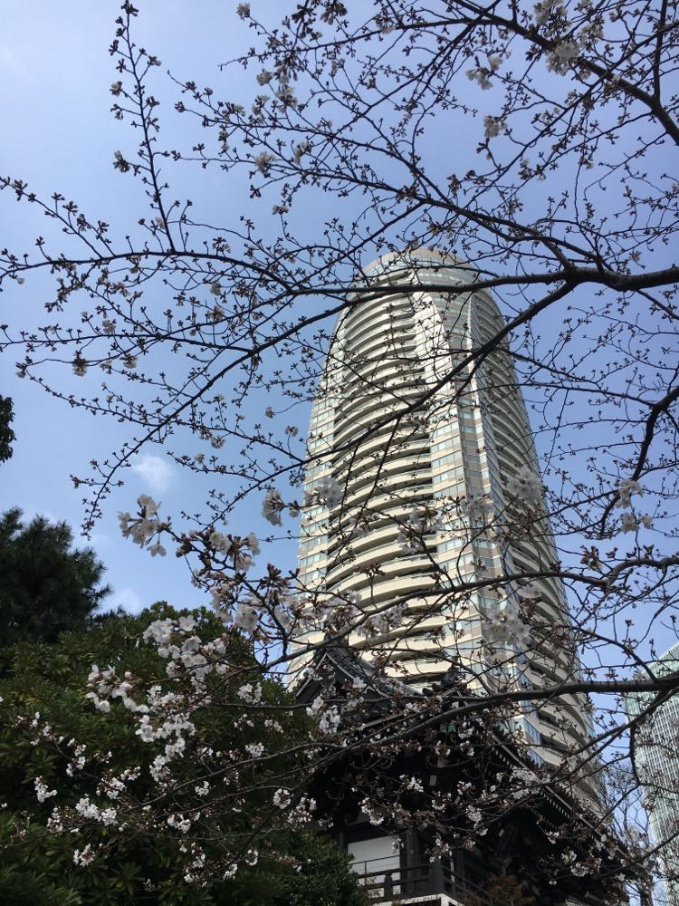

Jeg er Lasse, en 25 årig knægt. Som ung dreng har jeg altid været nysgerrig og har derfor prøvet lidt af vært. Som lille elskede jeg music hvilket førte til at jeg started I danmarks drenge kor. Dette varede dog ikke særlig længe da min far fik tilbudt et job I Japan og måtte slæbe familien med. Denne oplevelse endte med at have et stort indtryk på en teenage Lasse som har fulgt mig til idag.
Da turen gik hjem til Dk igen var der meget der skulle indhentes, hvilket ført til et år i 10´ene klasse. Dette gav mig tid til at tænke som lete til en beslutning om at jeg skulle på OrdrupGymnasium. Dette var tre laaaange år som ikke gjorde mig klogere. Derfor tog jeg 4 lig så lange sabbat år som lete mig her til Zealand.